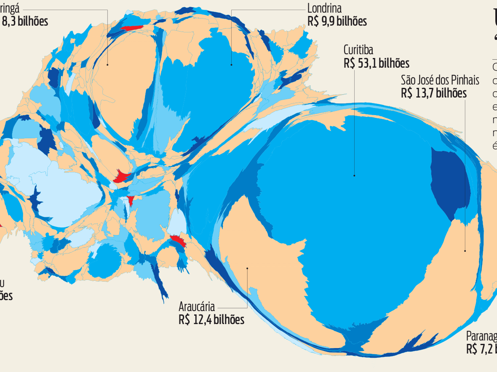
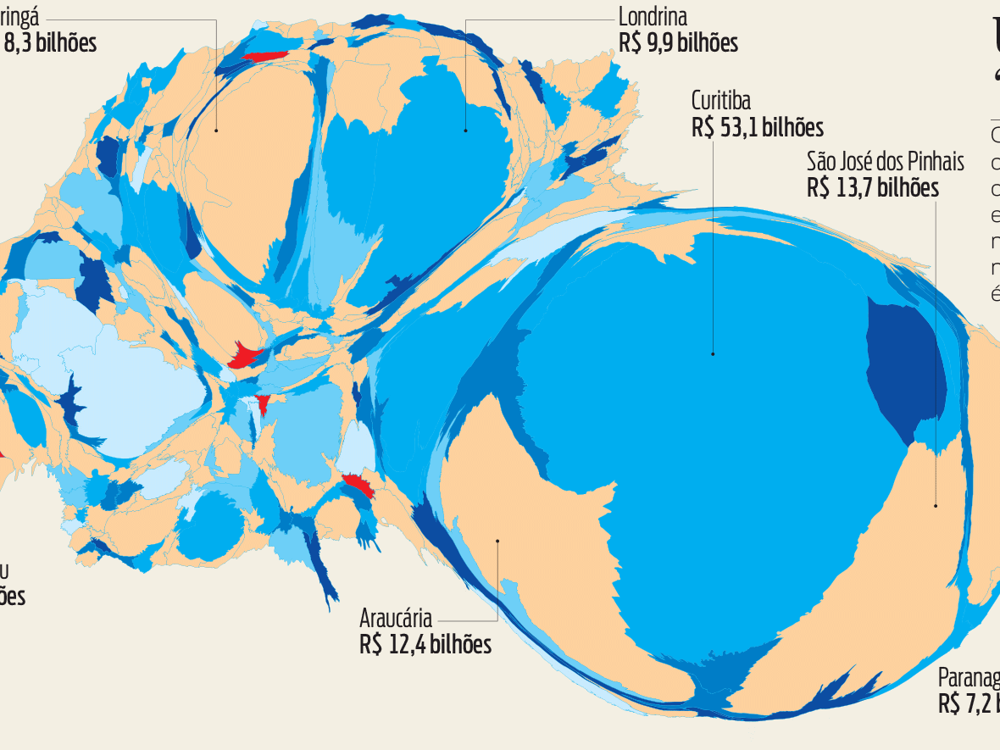

Paraná State’s GDP
Several looks at Paraná's GDP, using different techniques to explore and visualize the data.

I’d call myself a graphic designer, but that would leave out many other skills in editing, writing, infographics, data visualization, typography, programming, illustration, and perhaps the main one: knowing how to identify the best resource for each situation. I absolutely love print, but I'm also fascinated with the possibilities of interactive media.
My resume (PDF). You can also send me an old-fashioned email.
Portfólio em português.
Scholar stuff: my Academia.edu profile.
Graphic design and information architecture at the service of journalism, for those situations in which texts and photographs do not tell the full story.
Several looks at Paraná's GDP, using different techniques to explore and visualize the data.

Some examples of maps I made. An old passion that became an important part of my professional life.
A selection of infographics among the – literally – thousands I've made.

The explanation of an innovative service is an important part of itself, as well as information and content to make better use of it. In these projects I took care of both visuals and writing.
A service for importers that needed to be well explained so that its usefulness could be perceived.
A microenterprise that predicted some trends. Here information seeks empathy.
Cultural differences can cause bad impressions and harm business. This brochure aims to prevent these situations.
Interactive projects are good opportunities to think not only about how people read, but also how they press buttons, scroll pages, interpret microcopy. Another dimension in design projects.
A weblog with a 70s underground magazine feeling. CSS used like ink and Letraset.
A small project to help typeface designers to try to cover more languages in their fonts’ characters set, as well as learn about languages at the same time.

This project involved more text editing and information architecture than interaction design. Despite – or maybe because of – that, the result was efficient.
Tools for answering human sciences questions in large datasets.
Data visualization helping finding relationships and confirm hypotheses in thousands of academic books and articles.
I think of books as objects, as machines made for reading; doesn’t matter if I am designing or writing them.
Three books I produced, both for print and ePub versions.
I wrote some textbooks for undergraduate courses in Communication, Book Design, and Visual Arts.